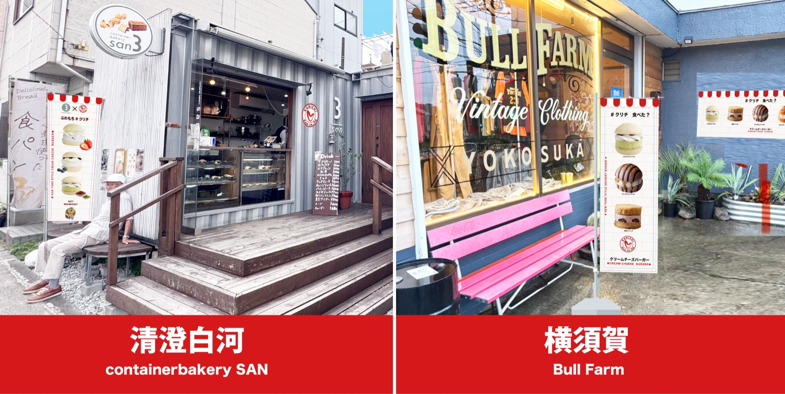

Vsw株式会社（本社：大阪府池田市、代表取締役社長：加藤 振一良）は、このたびクリームチーズバーガーブランド「#クリチ（KURICHI）」の販売を、神奈川県横須賀市のBull Farm様および東京都江東区清澄白河のContainer Bakery SAN様において開始いたします。

今回の販売開始により、「#クリチ」は首都圏での販売ネットワークをさらに拡大します。地域に根ざした魅力あるベーカリーやカフェそして魅力あるショップとの連携を通じて、より多くのお客様へ新しいクリームチーズバーガー体験をお届けしてまいります。
■ 販売開始店舗
Bull Farm 様
所在地：神奈川県横須賀市
自然豊かな環境の中で地域に親しまれている人気店です。このたび「#クリチ」の新たな販売拠点としてお取り扱いいただきます。
Instagram：@bull_farm55
Container Bakery SAN 様
所在地：東京都江東区・清澄白河
パンとライフスタイルを提案する人気ベーカリー。感度の高い街・清澄白河において、「#クリチ」をお楽しみいただけます。
Instagram：@containerbakery.san_kiyosumi
■ 今後の展開
Vsw株式会社では、全国各地のベーカリー、カフェ、セレクトショップなどとの連携を進め、「#クリチ」をより身近に楽しんでいただける販売ネットワークの拡大を目指してまいります。また、日本国内に加え、中国・台湾・韓国をはじめとするアジア市場への展開も積極的に推進し、「#クリチ」ブランドを世界へ発信してまいります。
さらに、販売パートナーやお取引先をはじめとするステークホルダーの皆様とともに、新たな商品開発や魅力あるコンテンツの提供を通じて、お客様に新しい価値と喜びをお届けし、相互に成長できるパートナーシップ（Win-Winの関係）を築いてまいります。
今後とも、Vsw株式会社ならびに「#クリチ」をよろしくお願い申し上げます。